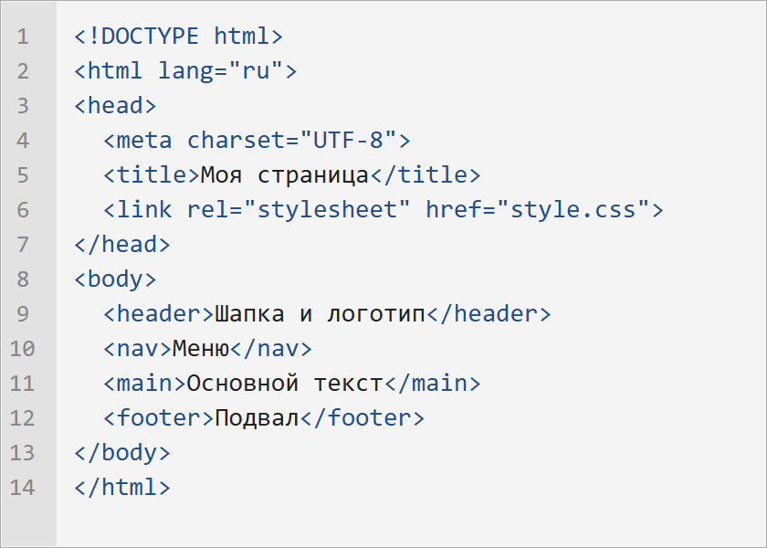
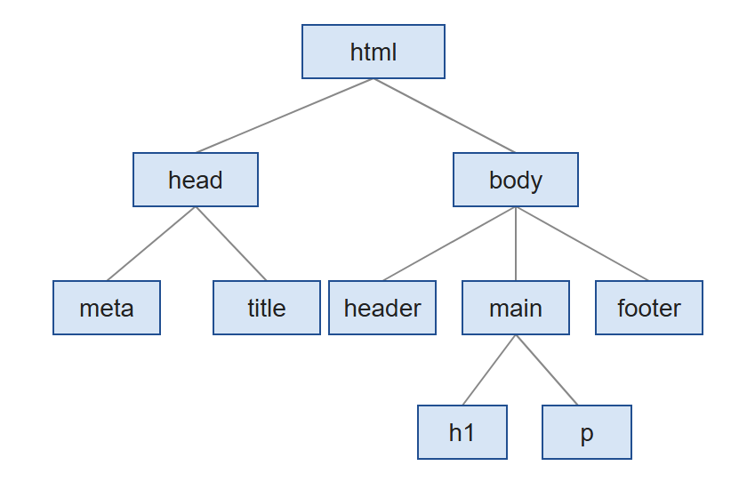
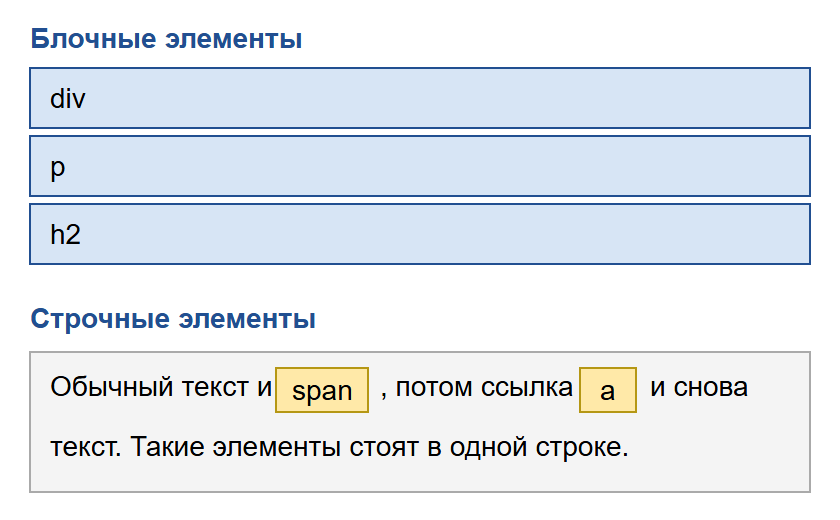
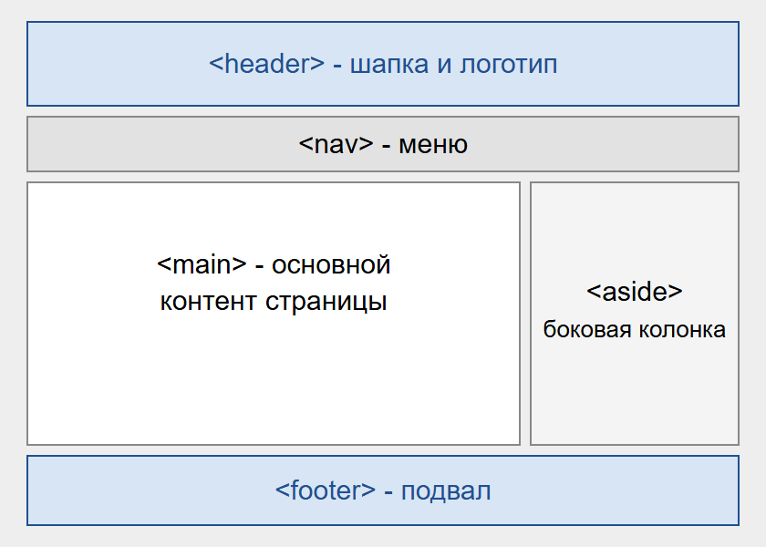

Структура HTML-страницы
HTML - это язык разметки, с помощью которого браузеру объясняют, что находится на странице: где заголовок, где абзац, где картинка, а где меню. Внешний вид задается уже отдельно, с помощью CSS.
Минимальная страница

Любая страница начинается со строки <!DOCTYPE html>. Она сообщает браузеру, что документ написан на современной версии HTML. Дальше идет тег html, в котором лежит все остальное. В атрибуте lang указывается язык страницы.
Внутри html есть две большие части. В head находится служебная информация, которую пользователь на самой странице не видит: кодировка, заголовок вкладки, описание для поисковиков и ссылки на файлы стилей. В body находится все, что отображается на экране.
Если не указать charset="UTF-8", то русский текст может превратиться в непонятные символы. На этом легко попасться в самом начале.
Страница как дерево

Теги вкладываются друг в друга, поэтому страницу удобно представлять в виде дерева. Вверху стоит html, от него идут ветки head и body, а дальше все остальные элементы.
Браузер строит такое же дерево, когда загружает страницу. Оно называется DOM, и именно с ним работает JavaScript. Как это выглядит на практике, можно посмотреть в лабораторной работе про DOM-тест.
Блочные и строчные элементы

Блочные элементы, например div, p и заголовки, занимают всю доступную ширину и начинаются с новой строки. Им можно задавать ширину, высоту и отступы.
Строчные элементы, например span и a, идут прямо внутри текста и занимают столько места, сколько нужно их содержимому. Ширина и высота на них не действуют. Если они все-таки нужны, можно поставить display: inline-block.
Семантические теги

Всю страницу можно собрать из одних div, и выглядеть она будет так же. Но лучше использовать теги, название которых говорит о содержимом:
header- шапка с логотипом;nav- меню;main- основное содержимое, на странице оно одно;sectionиarticle- разделы и отдельные материалы;aside- боковая колонка;footer- подвал.
Такой код проще читать, а поисковикам и программам для чтения с экрана легче понять страницу. Этот сайт тоже размечен такими тегами.